Publications
(* denotes equal contribution)
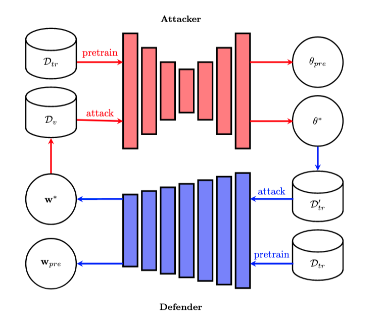
Not All Samples Are Equal: Quantifying Instance-level Difficulty in Targeted Data Poisoning
We quantify instance-level difficulty for targeted data poisoning via ergodic prediction accuracy, poison distance, and poison budget, predicting vulnerability across scenarios.
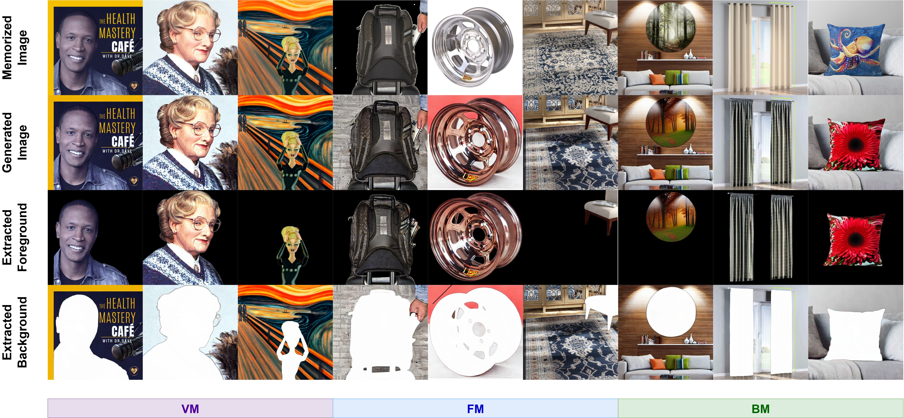
Demystifying Foreground-Background Memorization in Diffusion Models
We introduce FB-Mem, a segmentation-based metric to classify and quantify memorized regions in images generated by diffusion models, revealing pervasive local memorization and limitations of existing mitigation methods.
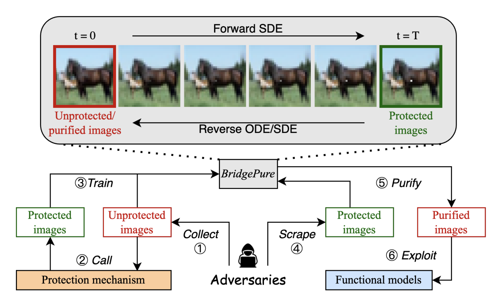
BridgePure: Revealing the Fragility of Black-box Data Protection
We show black-box data protections can be substantially bypassed if a small set of unprotected in-distribution data is available. This small set can be used to train a diffusion bridge model which effectively remove the protection from any previously unseen data within the same distribution.
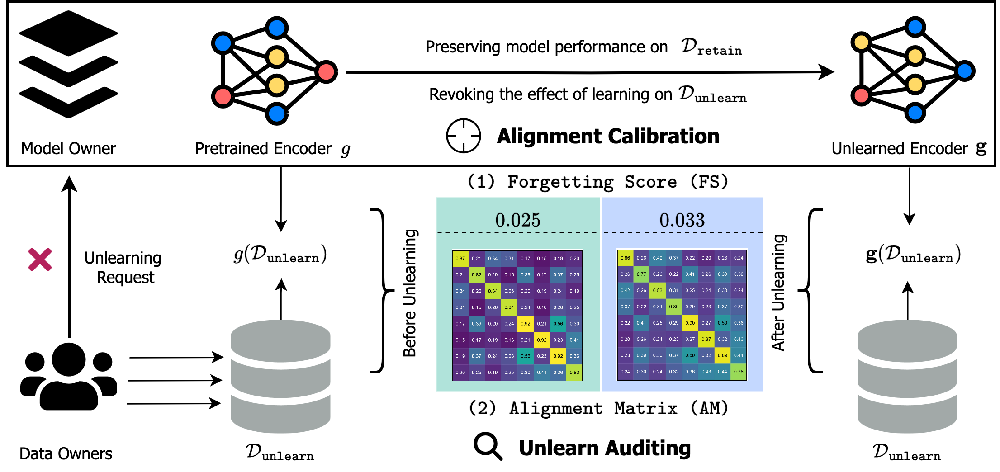
MUC: Machine Unlearning for Contrastive Learning with Black-box Evaluation
Transactions on Machine Learning Research (TMLR) /
ICML 2024 NextGenAISafety Workshop (Oral) /
paper /
arXiv
We address machine unlearning for contrastive learning pretraining schemes via a novel method called Alignment Calibration. We also propose new auditing tools for data owners to easily validate the effect of unlearning.
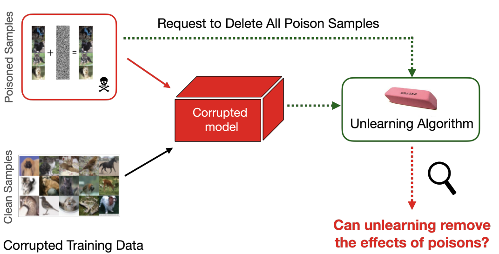
Machine Unlearning Fails to Remove Data Poisoning Attacks
ICLR 2025 / ICML 2024 Generative AI and Law Workshop (Oral) /
arXiv
We find that current approaches for machine unlearning (MUL) are not effective at removing the effect of data poisoning attacks.
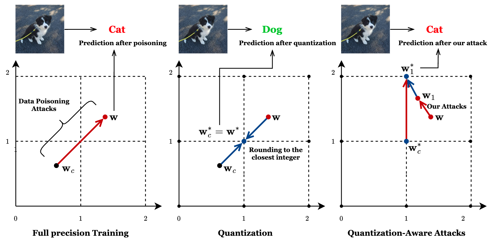
On the Robustness of Neural Networks Quantization against Data Poisoning Attacks
ICML 2024 NextGenAISafety Workshop /
paper
We find that neural network quantization offers improved robustness against different data poisoning attacks.

Disguised Copyright Infringement of Latent Diffusion Models
ICML 2024 / ICML 2024 Generative AI and Law Workshop /
arXiv
We reveal the threat of disguised copyright infringement of latent diffusion models, where one constructs a disguise that looks drastically different from the copyrighted sample yet still induces the effect of training Latent Diffusion Models on it.

Indiscriminate Data Poisoning Attacks on Pre-trained Feature Extractors
We study indiscriminate data poisoning attacks against pre-trained feature extractors for fine-tuning and transfer learning tasks and propose feature targeted attacks to address optimization difficulty under constraints.
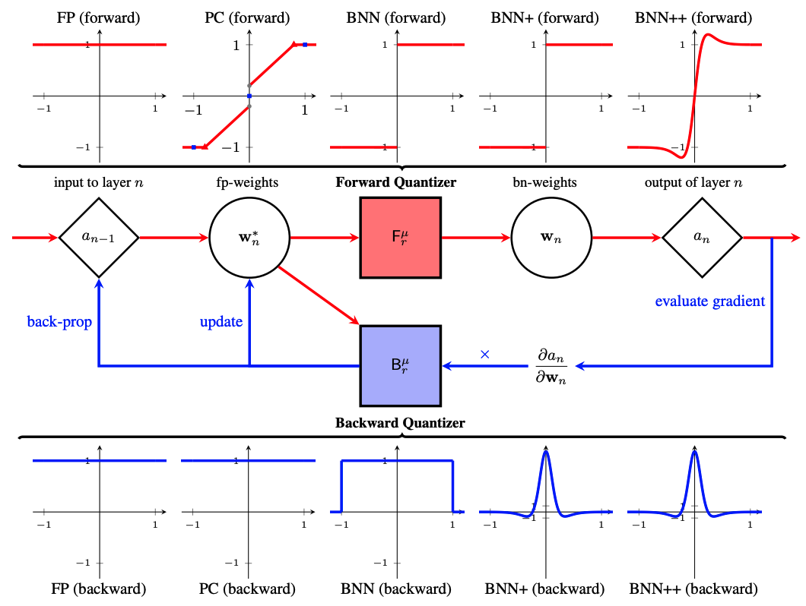
Understanding Neural Network Binarization with Forward and Backward Proximal Quantizers
We propose forward backward proximal quantizers for understanding approximate gradients in neural network quantization and provide a a new tool for designing new algorithms.
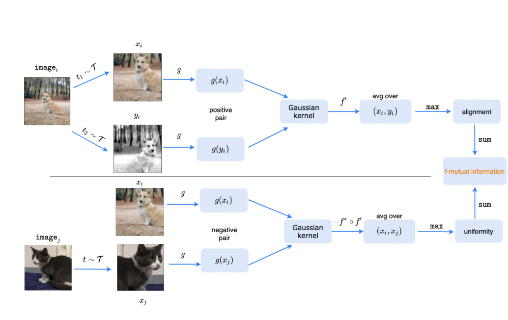
f-MICL: Understanding and Generalizing InfoNCE-based Contrastive Learning
Transactions on Machine Learning Research /
paper
We propose a general and novel loss function on contrastive learning based on f-mutual information. Additionally, we propose a f-Gaussain similarity funcntion with better interpretability and empirical performance.
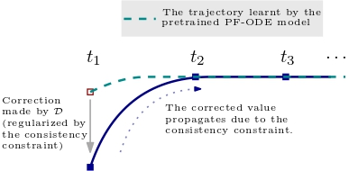
CM-GAN: Stablizing GAN Training with Consistency Models
ICML 2023 Wrokshop on Structured Probabilistic Inference & Generative Modeling /
paper
We propose CM-GAN by combining the main strengths of diffusions and GANs while mitigating their major drawbacks.
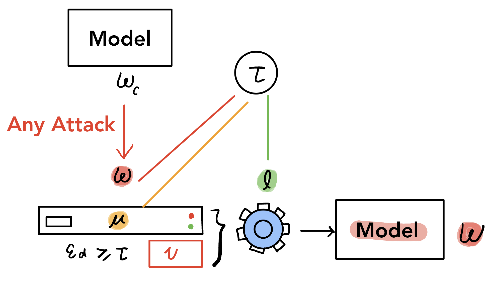
Exploring the Limits of Model-Targeted Indiscriminate Data Poisoning Attacks
We find (1) existing indiscriminate attacks are not well-designed (or optimized), and we reduce the performance gap with a new attack; (2) there exists some intrinsic barriers of data poisoning attacks, namely that when the poisoning fraction is smaller than a (easy to calculate) threshold, no attack succeeds.
Indiscriminate Data Poisoning Attacks on Neural Networks
Transactions on Machine Learning Research (also appeared in NeurIPS 2022 ML Safety Workshop and Trustworthy and Socially Responsible Machine Learning (TSRML) Workshop) /
paper /
code
We find that neural networks are surprisingly hard to (indiscriminate) poison and give better attacks.
f-mutual Information Contrastive Learning
NeurIPS 2021 workshop on self-supervised learning (Contributed Talk) /
paper /
poster /
talk
We propose a general and novel loss function on contrastive learning based on f-mutual information.
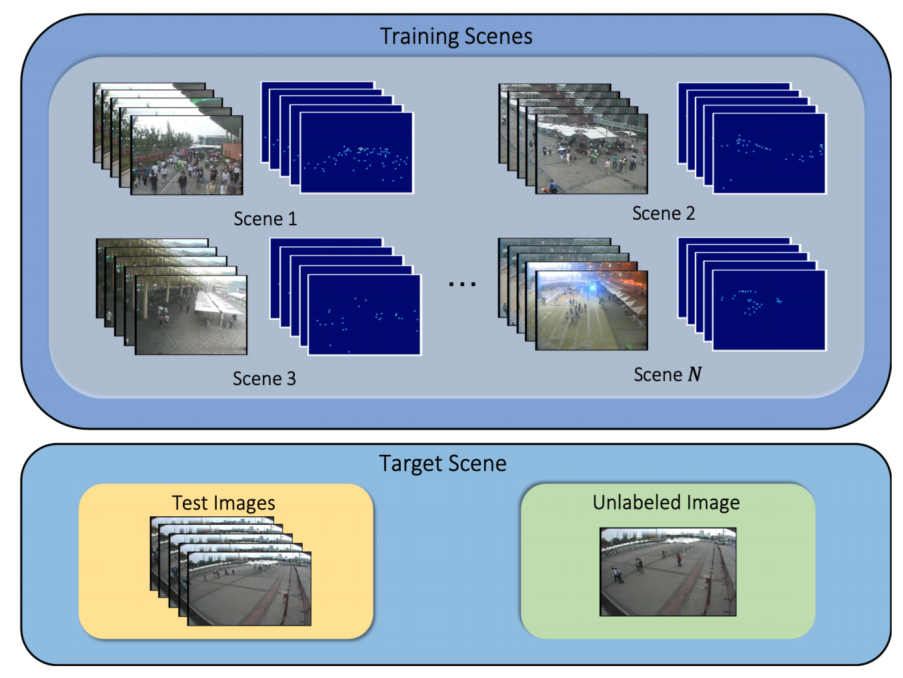
AdaCrowd: Unlabeled Scene Adaptation for Crowd Counting
IEEE Transactions on Multimedia (TMM), 2021 /
arXiv /
code
We propose a new problem called unlabeled scene adaptive crowd counting.

Few-shot Scene-adaptive Anomaly Detection
We propose a more realistic problem setting for anomaly detection in surveillance videos and solve it using a meta-learning based algorithm.
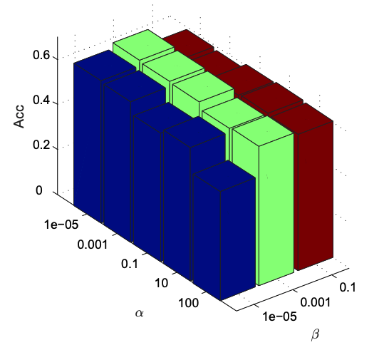
Structure Learning with Similarity Preserving
Neural Networks, 2020 /
arXiv
We propose a structure learning framework that retains the pairwise similarities between the data points.
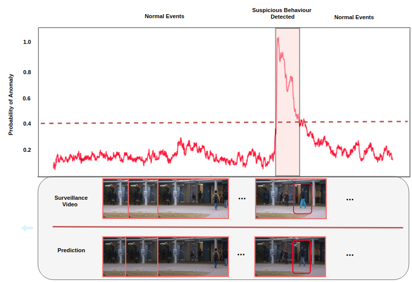
Future Frame Prediction Using Convolutional VRNN for Anomaly Detection
We propose a novel sequential generative model based on variational autoencoder (VAE) for future frame prediction with convolutional LSTM (ConvLSTM).
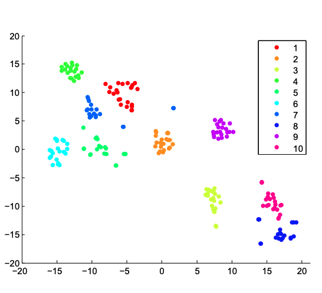
Similarity Learning via Kernel Preserving Embedding
We propose a novel similarity learning framework by minimizing the reconstruction error of kernel matrices, rather than the reconstruction error of original data adopted by existing work.
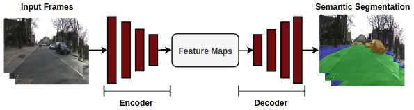
Semantic Segmentation in Compressed Videos
We propose a ConvLSTM-based model to perform semantic segmentation on compressed videos directly. This significantly speed up the training and test speed.
{kind=link}
{kind=link}
{kind=link}
{kind=link}
{kind=link}
{kind=link}
{kind=link}
{kind=link}
{kind=link}
{kind=link}
{kind=link}
{kind=link}
{kind=link}
{kind=link}
{kind=link}